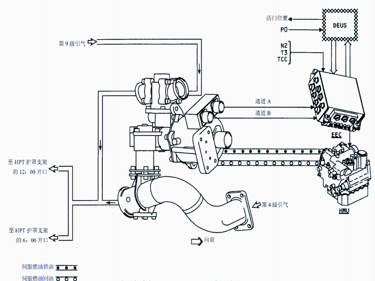

EEC使用这些数据控制 HPTACC 活门 ：
EEC通常通过显示电子装置（DEU）从 ADIRU 接收 PO。其它数据来自发动机传感器。
HPTACC 系统自动地工作。EEC使用飞机和发动机数据控制用于冷却高压涡轮护罩支架的 HPC 第 9 级/第 4 级引气比率。如果ADIRU 数据变得无效，EEC使用在 EEC内的 PO传感器。EEC发送一个 HPTACC 指令信号至 HMU。HMU 发送修正的伺服燃油压力至 HPTACC 活门的杆侧和筒侧。这就移动在 HPTACC 活门内的活门。活门控制 HPC 第 9 级和第 4 级空气的流量。这就控制流至HPT 护罩支架的温度。
EEC 从 N2 转速，T3 和高度（PO）计算需要的 HPT 机匣支架温度（TCC）。如果 TCC 过高，EEC 发送一个信号至 HMU 冷却HPT 护罩支架。 如 TCC过低， EEC发送一个信号至 HMU冷却 HPT护罩支架少一些。
作动筒有两个 LVDT。EEC 使用这些 LVDT 监控 HPTACC 作动筒的位置。1 个 LVDT 发送一个电信号至 EEC的通道 A。另一个LVDT 发送一个电信号至通道 B。
HPTACC 有五个工作方式：
| 发动机状态 | HPTACC 方式 | |
|---|---|---|
| 冷起动 | 开始是全部第 4 级，然后过渡到混合方式至全部第 9 级 | |
| 热起动 | 第 9 级以把 HPT 磨擦减至最小 | |
| 起飞和上升 | 开始 4级以降低 EGT峰值，然后过渡至混合方式 | |
| 巡航 | 第 4 级以减小燃油消耗量 | |
| 下降 | 低流量第 9 级以防止磨擦 |